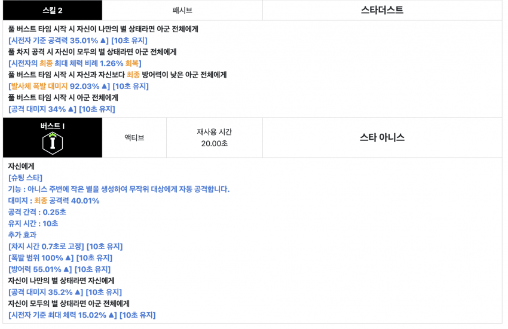
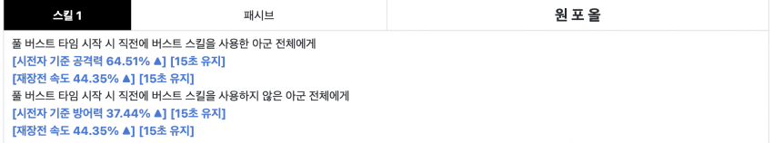
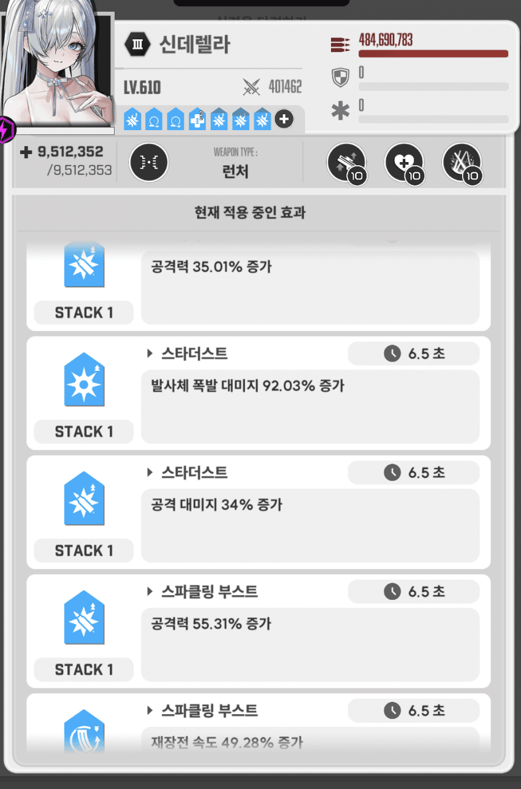
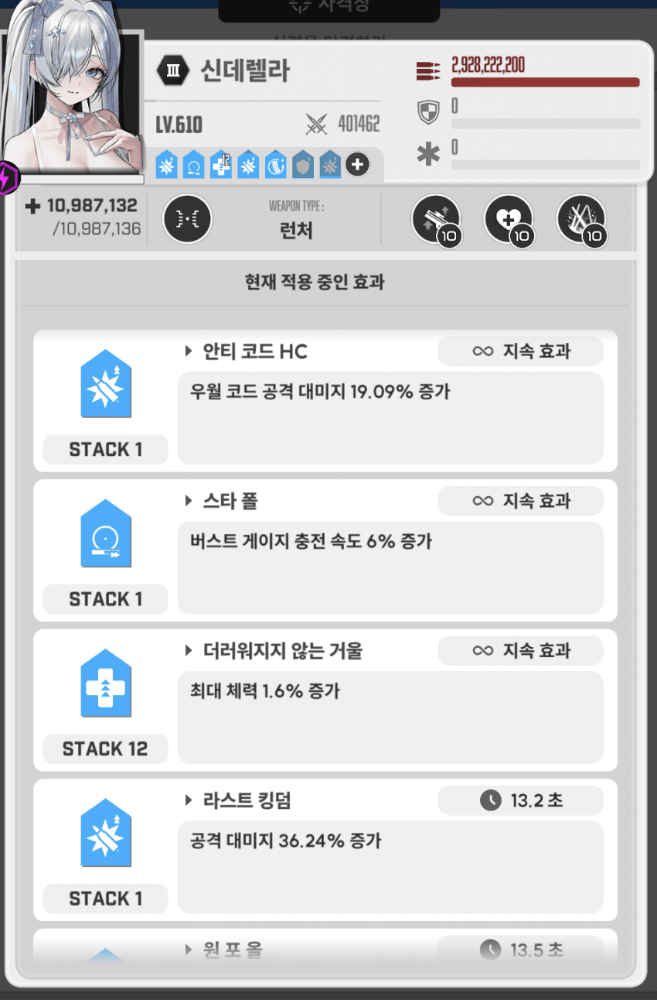

선요약
1. 유레 전격에서 아니스 크라운 신데를 같이 쓰면 문제가 될 수 있음
2. 크라운 1스가 시방증 37퍼인데 아니스 버스트 방증이 55퍼라 돌파차이나면 2스 폭발뎀 90퍼 못받음
3. 신데 돌파가 높고 방증 옵션 달려있으면 방증 없애던가 아니스 돌파 or 방증 달아야 됨
돌니스 돌려보다가 충격적인거 발견함
일단 전격 유레에서는 아니스 크라운 신데 네온 클이든이 ㅈㄴ 쌔서 그렇게 쓸 수 있을거 같은데 문제가 생길 수 있음
우선 아니스 스킬을 보면

2스에 폭발뎀증 90퍼가 있고 버스트에 방증 55퍼가 있음

크라운 1스에 시방증 37퍼 있는데 15초 유지라 다음 버스트 킬때까지 유지됨 (아니면 5초 쉬고 버스트 눌러야 됨)
유레에서 방증때문에 2초 계속 쉬는건 재앙임. 그래서 아니스 명함이면 신데랑 같이 쓸 떄 방증 유의해야 됨
검증
본인 신데 4코강 방증 있고, 아니스 명함임 -> 신데 방증 갈았는데도 못받음 ㅈ됨

첫버에는 스타더스트 폭발뎀증 90퍼 있음

다음버부턴 폭발뎀증 안보임
아무리 신데가 평타 비중이 낮아도 폭발뎀증 90퍼는 무시할 수 없음
일단 사격장 실험해보고 뽀찌로 아니스 방증 붙으면 함부러 갈지마
<수정> 신데 4코강 아니스 명함이면 방증 갈아도 못 받을 수 있음